Available components
The following table shows which components are supported by the simulator for which kind of simulations.
| component | symbol | DC analysis | S-Parameter analysis |
Noise waves | AC analysis | AC noise | Transient analysis |
Harmonic Balance |
Digital simulation |
comment |
|---|---|---|---|---|---|---|---|---|---|---|
| resistor |  |
yes | yes | yes | yes | yes | yes | yes | no | |
| capacitor | 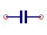 | yes | yes | yes | yes | yes | yes | yes | no | |
| inductor | 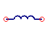 | yes | yes | yes | yes | yes | yes | yes | no | |
| ground | yes | yes | yes | yes | yes | yes | yes | yes | required in analog simulations | |
| DC block | 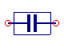 | yes | yes | yes | yes | yes | yes | no | no | |
| DC feed | 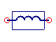 | yes | yes | yes | yes | yes | yes | no | no | |
| bias T | 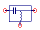 | yes | yes | yes | yes | yes | yes | no | no | |
| attenuator | 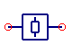 | yes | yes | yes | yes | yes | yes | no | no | |
| isolator |  |
yes | yes | yes | yes | yes | yes | no | no | |
| circulator | 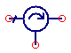 | yes | yes | yes | yes | yes | yes | no | no | |
| phase shifter | 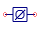 | yes | yes | yes | yes | yes | no | no | no | DC model: short |
| ideal coupler | 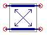 | yes | yes | yes | yes | yes | no | no | no | |
| time controlled switch | 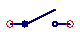 | yes | yes | yes | yes | yes | yes | no | no | |
| relais | 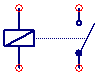 | yes | yes | yes | yes | yes | yes | no | no | |
| current probe |  |
yes | yes | yes | yes | yes | yes | no | no | |
| voltage probe | 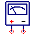 | yes | yes | yes | yes | yes | yes | no | no | |
| ideal transmission line |
 |
yes | yes | yes | yes | yes | yes | no | no | |
| 4-terminal transmission line |
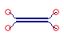 | yes | yes | yes | yes | yes | yes | no | no | |
| twisted pair line |
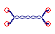 | yes | yes | yes | yes | yes | no | no | no | |
| coaxial line | 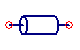 | yes | yes | yes | yes | yes | no | no | no | |
| rectangular waveguide | 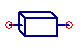 | yes | yes | yes | yes | yes | no | no | no | |
| microstrip line | 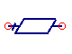 | yes | yes | yes | yes | yes | no | no | no | |
| microstrip open | 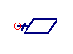 | yes | yes | yes | yes | yes | no | no | no | |
| microstrip cross | 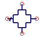 | yes | yes | yes | yes | yes | no | no | no | |
| microstrip mitered bend |
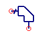 | yes | yes | yes | yes | yes | no | no | no | |
| microstrip step |  |
yes | yes | yes | yes | yes | no | no | no | |
| microstrip tee | 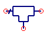 | yes | yes | yes | yes | yes | no | no | no | |
| microstrip corner | 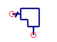 | yes | yes | yes | yes | yes | no | no | no | |
| microstrip gap | 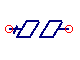 | yes | yes | yes | yes | yes | no | no | no | |
| coupled microstrip line |
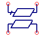 | yes | yes | yes | yes | yes | no | no | no | |
| microstrip via | 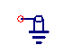 | yes | yes | yes | yes | yes | no | no | no | |
| microstrip radial stub | 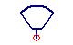 | yes | yes | yes | yes | yes | no | no | no | |
| coplanar line | 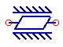 | yes | yes | yes | yes | yes | no | no | no | |
| coplanar open | yes | yes | yes | yes | yes | no | no | no | ||
| coplanar short | 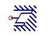 | yes | yes | yes | yes | yes | no | no | no | |
| coplanar series gap | 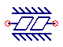 | yes | yes | yes | yes | yes | no | no | no | |
| coplanar step | 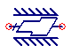 | yes | yes | yes | yes | yes | no | no | no | |
| bond wire | 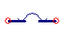 | yes | yes | yes | yes | yes | no | no | no | |
| transformer | 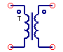 | yes | yes | yes | yes | yes | yes | no | no | |
| symmetrical transformer |
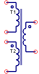 | yes | yes | yes | yes | yes | yes | no | no | |
| voltage controlled current source |
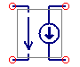 | yes | yes | yes | yes | yes | yes | no | no | |
| gyrator | 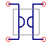 | yes | yes | yes | yes | yes | yes | no | no | |
| current controlled current source |
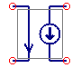 | yes | yes | yes | yes | yes | yes | no | no | |
| voltage controlled voltage source |
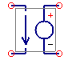 | yes | yes | yes | yes | yes | yes | no | no | |
| current controlled voltage source |
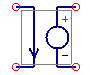 | yes | yes | yes | yes | yes | yes | no | no | |
| DC voltage | 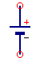 | yes | yes | yes | yes | yes | yes | no | no | |
| DC current | 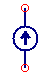 | yes | yes | yes | yes | yes | yes | no | no | |
| AC voltage | 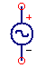 | yes | yes | yes | yes | yes | yes | no | no | |
| AC current | 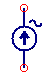 | yes | yes | yes | yes | yes | yes | no | no | |
| AC power | 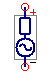 | yes | yes | yes | yes | yes | yes | no | no | s-parameter port |
| AM modulated voltage source | 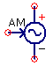 | yes | yes | yes | yes | yes | yes | no | no | |
| PM modulated voltage source | 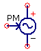 | yes | yes | yes | yes | yes | yes | no | no | |
| noise voltage | 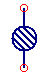 | yes | yes | yes | yes | yes | yes | no | no | |
| noise current | 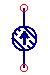 | yes | yes | yes | yes | yes | yes | no | no | |
| diode | 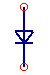 | yes | yes | yes | yes | yes | yes | yes | no | |
| diac (bidirectional trigger diode) | 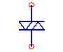 | yes | yes | yes | yes | yes | yes | no | no | |
| thyristor (silicon controlled rectifier) | 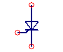 | yes | yes | yes | yes | yes | yes | no | no | |
| triac (bidirectional thyristor) | yes | yes | yes | yes | yes | yes | no | no | ||
| junction fet | yes | yes | yes | yes | yes | yes | no | no | ||
| homo junction bipolar transistor |
yes | yes | yes | yes | yes | yes | no | no | ||
| homo junction bipolar transistor with substrate |
yes | yes | yes | yes | yes | yes | no | no | ||
| mosfet | yes | yes | yes | yes | yes | yes | no | no | ||
| depletion mosfet | yes | yes | yes | yes | yes | yes | no | no | ||
| mosfet with substrate, i.e. bulk |
yes | yes | yes | yes | yes | yes | no | no | ||
| FBH HBT verilog device | yes | yes | yes | yes | yes | yes | yes | no | ||
| HICUM Level 2 v2.1 verilog device | yes | yes | yes | yes | yes | yes | yes | no | ||
| HICUM Level 2 v2.22 verilog device | yes | yes | yes | yes | yes | yes | yes | no | ||
| HICUM Level 2 v2.23 verilog device | yes | yes | yes | yes | yes | yes | yes | no | ||
| HICUM Level 0 v1.12 verilog device | yes | yes | yes | yes | yes | yes | yes | no | npn and pnp type | |
| HICUM Level 0 v1.2 verilog device | yes | yes | yes | yes | yes | yes | yes | no | npn and pnp type | |
| MESFET verilog device | yes | yes | yes | yes | yes | yes | yes | no | Curtice, Statz, TOM-1 and TOM-2 included nfet only |
|
| EPFL EKV v2.6 verilog device | yes | yes | yes | yes | yes | yes | yes | no | nmos and pmos type | |
| equation defined device | yes | yes | yes | yes | yes | yes | yes | no | 1 to 8 branches possible (more necessary?) | |
| equation defined RF device | yes | yes | yes | yes | yes | yes | no | no | 1 to 8 ports possible; S-, Y- and Z-parameters | |
| equation defined 2-port RF device | yes | yes | yes | yes | yes | yes | no | no | A-, G-, H-, T-, S-, Y- and Z-parameters | |
| S-parameter file data |
no | yes | yes | yes | yes | no | no | no | 1- to 40-port including an additional reference port definitions possible (more necessary?) |
|
| SPICE netlist | yes | yes | yes | yes | yes | yes | no | no | subcircuit as well as plain netlist supported |
|
| single voltage pulse source |
yes | yes | yes | yes | yes | yes | no | no | ||
| single current pulse source |
yes | yes | yes | yes | yes | yes | no | no | ||
| periodic rectangular voltage pulse source |
yes | yes | yes | yes | yes | yes | no | no | ||
| periodic rectangular current pulse source |
yes | yes | yes | yes | yes | yes | no | no | ||
| exponential voltage pulse source | yes | yes | yes | yes | yes | yes | no | no | ||
| exponential current pulse source | yes | yes | yes | yes | yes | yes | no | no | ||
| file based voltage source | yes | yes | yes | yes | yes | yes | no | no | ||
| file based current source | yes | yes | yes | yes | yes | yes | no | no | ||
| amplifier | yes | yes | yes | yes | yes | yes | no | no | ||
| operational amplifier |
yes | yes | yes | yes | yes | yes | no | no | ||
| modular operational amplifier verilog device | yes | yes | yes | yes | yes | yes | yes | no | ||
| logarithmic amplifier verilog device | yes | yes | yes | yes | yes | yes | yes | no | ||
| potentiometer verilog device | yes | yes | yes | yes | yes | yes | yes | no | ||
| photodiode verilog device | yes | yes | yes | yes | yes | yes | yes | no | ||
| phototransistor verilog device | yes | yes | yes | yes | yes | yes | yes | no | npn-type only | |
| mutual inductors |
yes | yes | yes | yes | yes | yes | no | no | ||
| three mutual inductors |
yes | yes | yes | yes | yes | yes | no | no | ||
| correlated noise sources |
yes | yes | yes | yes | yes | yes | no | no | ||
| correlated noise voltage sources |
yes | yes | yes | yes | yes | yes | no | no | ||
| correlated noise current sources |
yes | yes | yes | yes | yes | yes | no | no | ||
| digital source |
yes | yes | yes | yes | yes | yes | no | yes | ||
| logical OR |
yes | yes | yes | yes | yes | yes | no | yes | ||
| logical NOR |
yes | yes | yes | yes | yes | yes | no | yes | ||
| logical AND |
yes | yes | yes | yes | yes | yes | no | yes | ||
| logical NAND |
yes | yes | yes | yes | yes | yes | no | yes | ||
| logical XOR |
yes | yes | yes | yes | yes | yes | no | yes | ||
| logical XNOR |
yes | yes | yes | yes | yes | yes | no | yes | ||
| inverter | yes | yes | yes | yes | yes | yes | no | yes | ||
| buffer | yes | yes | yes | yes | yes | yes | no | yes | ||
| D-flipflop | no | no | no | no | no | no | no | yes | only for digital simulations | |
| RS-flipflop | no | no | no | no | no | no | no | yes | only for digital simulations | |
| JK-flipflop | no | no | no | no | no | no | no | yes | only for digital simulations | |
| logic 0 | yes | yes | yes | yes | yes | yes | no | yes | ||
| logic 1 | yes | yes | yes | yes | yes | yes | no | yes | ||
| T-flipflop w/ SR | yes | yes | yes | yes | yes | yes | no | yes | ||
| JK-flipflop w/ SR |  |
yes | yes | yes | yes | yes | yes | no | yes | |
| D-flipflop w/ SR | yes | yes | yes | yes | yes | yes | no | yes | ||
| highest priority encoder | yes | yes | yes | yes | yes | yes | no | yes | ||
| grey to binary code converter | yes | yes | yes | yes | yes | yes | no | yes | ||
| binary to grey code converter | yes | yes | yes | yes | yes | yes | no | yes | ||
| gated D-latch | yes | yes | yes | yes | yes | yes | no | yes | ||
| digital to analog voltage level shifter |  |
yes | yes | yes | yes | yes | yes | no | yes | |
| analog to digital voltage level shifter | yes | yes | yes | yes | yes | yes | no | yes | ||
| 2to1 multiplexer | yes | yes | yes | yes | yes | yes | no | yes | ||
| 4to1 multiplexer | yes | yes | yes | yes | yes | yes | no | yes | ||
| 8to1 multiplexer | yes | yes | yes | yes | yes | yes | no | yes | ||
| 2to4 demultiplexer | yes | yes | yes | yes | yes | yes | no | yes | ||
| 3to8 demultiplexer | yes | yes | yes | yes | yes | yes | no | yes | ||
| 4to16 demultiplexer | yes | yes | yes | yes | yes | yes | no | yes | ||
| 4x2 and/or | yes | yes | yes | yes | yes | yes | no | yes | ||
| 4x3 and/or | yes | yes | yes | yes | yes | yes | no | yes | ||
| 4x4 and/or | yes | yes | yes | yes | yes | yes | no | yes | ||
| 2bit pattern generator | yes | yes | yes | yes | yes | yes | no | yes | ||
| 3bit pattern generator | yes | yes | yes | yes | yes | yes | no | yes | ||
| 4bit pattern generator | yes | yes | yes | yes | yes | yes | no | yes | ||
| 1bit comparator |  |
yes | yes | yes | yes | yes | yes | no | yes | |
| 2bit comparator | yes | yes | yes | yes | yes | yes | no | yes | ||
| 4bit comparator | yes | yes | yes | yes | yes | yes | no | yes | ||
| 1bit half adder | yes | yes | yes | yes | yes | yes | no | yes | ||
| 1bit full adder |  |
yes | yes | yes | yes | yes | yes | no | yes | |
| 2bit full adder | yes | yes | yes | yes | yes | yes | no | yes | ||
| VHDL file | no | no | no | no | no | no | no | yes | only for digital VHDL simulations | |
| Verilog-HDL file | no | no | no | no | no | no | no | yes | only for digital Verilog-HDL simulations |